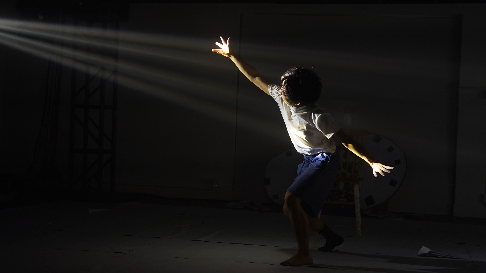
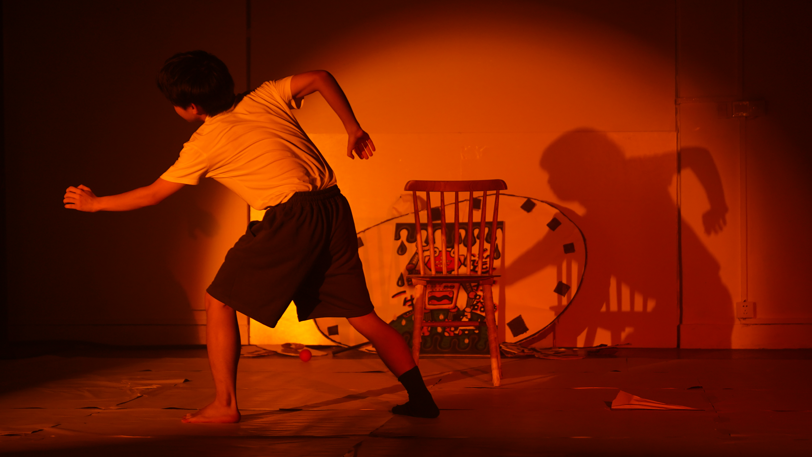
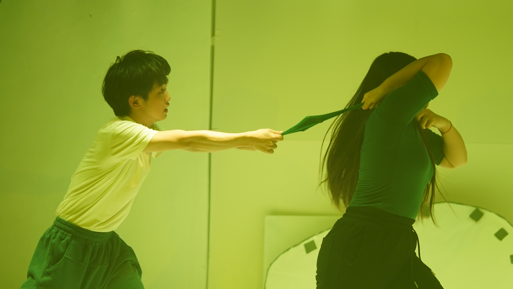

This work focuses on: Choices across past and future shaping the present
This work began from: Observation of a sundial
The work asks: What if one could meet their past and future selves?
Form / Method: Fragmented, humorous, narrative-driven
Year: 2023
Location: Nanjing, China
Duration: July – August 2023


